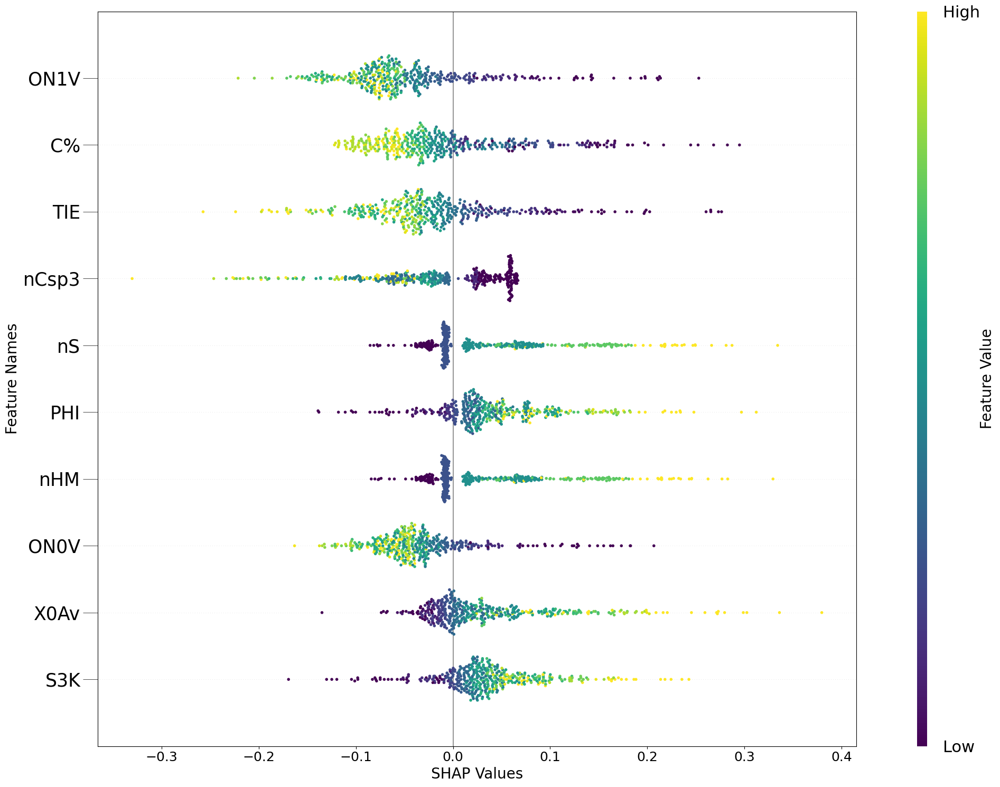

Generating Deep Neural Network Model Explanations via ChemML’s Explain Module
The chemml.explain module has three eXplainable AI (XAI) methods - DeepSHAP, LRP, and LIME. It allows both local (for a single instance) and global (aggregated for multiple instances) explanations. The explainations are in the form of a relevance score attributed to each feature used to build the DNN model.
We use a sample dataset from ChemML library which has the SMILES codes and 200 Dragon molecular descriptors (features) for 500 small organic molecules with their densities in \(kg/m^3\). We split the dataset into training and testing subsets and scale them. We then build and train a pytorch DNN on the training subset.
[1]:
import pandas as pd
import shap
from chemml.models import MLP
from chemml.datasets import load_organic_density
from sklearn.preprocessing import StandardScaler
from chemml.explain import Explain
_, y, X = load_organic_density()
columns = list(X.columns)
y = y.values.reshape(y.shape[0], 1).astype('float32')
X = X.values.reshape(X.shape[0], X.shape[1]).astype('float32')
# split 0.9 train / 0.1 test
ytr = y[:450, :]
yte = y[450:, :]
Xtr = X[:450, :]
Xte = X[450:, :]
scale = StandardScaler()
scale_y = StandardScaler()
Xtr = scale.fit_transform(Xtr)
Xte = scale.transform(Xte)
ytr = scale_y.fit_transform(ytr)
# PYTORCH
r1_pytorch = MLP(engine='pytorch',nfeatures=Xtr.shape[1], nneurons=[100,100,100], activations=['ReLU','ReLU','ReLU'],
learning_rate=0.001, alpha=0.0001, nepochs=100, batch_size=100, loss='mean_squared_error',
regression=True, nclasses=None, layer_config_file=None, opt_config='Adam')
r1_pytorch.fit(Xtr, ytr)
engine_model = r1_pytorch.get_model()
engine_model.eval()
In a future version of pandas all arguments of DataFrame.drop except for the argument 'labels' will be keyword-only.
[1]:
Sequential(
(0): Linear(in_features=200, out_features=100, bias=True)
(1): Linear(in_features=100, out_features=100, bias=True)
(2): ReLU()
(3): Linear(in_features=100, out_features=100, bias=True)
(4): ReLU()
(5): Linear(in_features=100, out_features=1, bias=True)
(6): ReLU()
)
DeepSHAP Explanations
We instantiate the chemml.explain object with an instance to be explained, the pytorch DNN object, and the feature names (columns). We then call the DeepSHAP method with a set of background or reference samples as directed by the SHAP library.
[2]:
X_instance = Xtr[0]
exp = Explain(X_instance = X_instance, dnn_obj = engine_model, feature_names = columns)
explanation, shap_obj = exp.DeepSHAP(X_background = Xtr[1:10])
explanation
Using a non-full backward hook when the forward contains multiple autograd Nodes is deprecated and will be removed in future versions. This hook will be missing some grad_input. Please use register_full_backward_hook to get the documented behavior.
[2]:
| MW | AMW | Sv | Se | Sp | Si | Mv | Me | Mp | Mi | ... | X4Av | X5Av | X0sol | X1sol | X2sol | X3sol | X4sol | X5sol | XMOD | RDCHI | |
|---|---|---|---|---|---|---|---|---|---|---|---|---|---|---|---|---|---|---|---|---|---|
| 0 | 0.004226 | -0.017965 | -0.002007 | -0.000315 | -0.00169 | -0.000138 | -0.005208 | -0.047417 | 0.00027 | -0.000075 | ... | -0.01016 | -0.004733 | -0.000346 | 0.000708 | 0.001949 | 0.001744 | 0.003523 | 0.003081 | 0.001851 | -0.000127 |
1 rows × 200 columns
Visualizing local DeepSHAP explanations using a waterfall plot adapted from the shap library.
[3]:
fig = exp.plot(local=True, rel_df=explanation,max_display=10, shap_obj=shap_obj)
[4]:
X_instance = Xtr
exp = Explain(X_instance = X_instance, dnn_obj = engine_model, feature_names = columns)
explanation, shap_obj = exp.DeepSHAP(X_background = Xtr[1:10])
explanation
Using a non-full backward hook when the forward contains multiple autograd Nodes is deprecated and will be removed in future versions. This hook will be missing some grad_input. Please use register_full_backward_hook to get the documented behavior.
[4]:
| MW | AMW | Sv | Se | Sp | Si | Mv | Me | Mp | Mi | ... | X4Av | X5Av | X0sol | X1sol | X2sol | X3sol | X4sol | X5sol | XMOD | RDCHI | |
|---|---|---|---|---|---|---|---|---|---|---|---|---|---|---|---|---|---|---|---|---|---|
| 0 | 0.004226 | -0.017965 | -0.002007 | -0.000315 | -0.001690 | -0.000138 | -0.005208 | -0.047417 | 0.000270 | -0.000075 | ... | -0.010160 | -0.004733 | -0.000346 | 0.000708 | 0.001949 | 0.001744 | 0.003523 | 0.003081 | 0.001851 | -0.000127 |
| 1 | -0.028730 | 0.016923 | 0.008729 | 0.001357 | 0.006194 | 0.000647 | 0.007421 | 0.095255 | -0.015222 | 0.001943 | ... | 0.010119 | 0.004144 | -0.005155 | -0.008186 | -0.016180 | -0.012706 | -0.022199 | -0.010823 | -0.022696 | 0.000656 |
| 2 | 0.033408 | -0.022131 | -0.010370 | -0.001949 | -0.005127 | -0.000974 | -0.007972 | -0.009267 | -0.020344 | 0.002649 | ... | 0.002977 | 0.002012 | 0.008781 | 0.011291 | 0.016925 | 0.012719 | 0.015563 | 0.004058 | 0.029044 | -0.002798 |
| 3 | -0.049662 | 0.035422 | 0.021034 | 0.002494 | 0.009761 | 0.001202 | -0.011599 | 0.068437 | -0.010441 | -0.000044 | ... | -0.027242 | -0.014504 | -0.018708 | -0.023040 | -0.027916 | -0.017599 | -0.025875 | -0.015381 | -0.049061 | 0.005836 |
| 4 | 0.043910 | 0.027921 | -0.007267 | -0.001379 | -0.004171 | -0.000695 | -0.002118 | 0.024150 | 0.002204 | 0.003459 | ... | 0.001431 | 0.001361 | 0.007888 | 0.013086 | 0.018476 | 0.015196 | 0.030085 | 0.008146 | 0.041555 | -0.001472 |
| ... | ... | ... | ... | ... | ... | ... | ... | ... | ... | ... | ... | ... | ... | ... | ... | ... | ... | ... | ... | ... | ... |
| 445 | 0.005420 | 0.363526 | 0.021909 | 0.005207 | 0.012532 | 0.002856 | 0.063025 | 0.353158 | 0.146915 | 0.001592 | ... | -0.000388 | 0.000952 | -0.007028 | -0.001970 | -0.001590 | 0.001733 | 0.010887 | -0.009257 | 0.012901 | 0.002078 |
| 446 | 0.022738 | -0.000947 | -0.008990 | -0.000644 | -0.005321 | -0.000275 | 0.008555 | -0.076582 | 0.034864 | -0.003276 | ... | 0.001233 | 0.001632 | 0.007859 | 0.008330 | 0.015024 | 0.011447 | 0.016477 | 0.011646 | 0.016196 | -0.001541 |
| 447 | 0.040769 | -0.017716 | -0.012482 | -0.002395 | -0.006325 | -0.001261 | -0.006515 | -0.010023 | -0.017198 | 0.004421 | ... | 0.004269 | 0.002139 | 0.011364 | 0.014354 | 0.018635 | 0.012219 | 0.019320 | 0.013332 | 0.037022 | -0.002666 |
| 448 | 0.031687 | 0.000953 | -0.011975 | -0.001535 | -0.007395 | -0.000637 | 0.007118 | -0.048946 | 0.023622 | -0.005410 | ... | 0.002070 | 0.000787 | 0.008766 | 0.011670 | 0.019803 | 0.014711 | 0.023315 | 0.013825 | 0.028351 | -0.001976 |
| 449 | 0.086079 | 0.019403 | -0.024792 | -0.004013 | -0.015506 | -0.001990 | 0.006451 | -0.047543 | 0.034029 | -0.004332 | ... | -0.008165 | -0.001471 | 0.019860 | 0.026304 | 0.049016 | 0.040434 | 0.062661 | 0.038612 | 0.073309 | -0.005649 |
450 rows × 200 columns
[5]:
fig = exp.plot(local=False, rel_df=explanation,max_display=10, shap_obj=shap_obj)

[6]:
X_instance = Xtr[0]
exp = Explain(X_instance = X_instance, dnn_obj = engine_model, feature_names = columns)
explanation, gb = exp.LRP(strategy='zero', global_relevance=False)
explanation
[6]:
| MW | AMW | Sv | Se | Sp | Si | Mv | Me | Mp | Mi | ... | X4Av | X5Av | X0sol | X1sol | X2sol | X3sol | X4sol | X5sol | XMOD | RDCHI | |
|---|---|---|---|---|---|---|---|---|---|---|---|---|---|---|---|---|---|---|---|---|---|
| 0 | 3.852358e-08 | 5.460922e-08 | -9.916600e-09 | -4.480899e-11 | -1.985339e-09 | 1.119740e-10 | 2.441856e-08 | 9.313563e-08 | 2.732422e-08 | -4.074020e-12 | ... | 4.698213e-08 | 2.548810e-08 | 1.979194e-08 | 1.979182e-08 | 2.497676e-08 | 1.692370e-08 | 2.368907e-08 | 1.703364e-08 | 3.827584e-08 | -1.943156e-09 |
1 rows × 200 columns
[7]:
f = exp.plot(local=True,rel_df = explanation, max_display=20)
[8]:
# strategies + global relevance
X_instance = Xte
exp = Explain(X_instance = X_instance, dnn_obj = engine_model, feature_names = columns)
explanation, gb = exp.LRP(strategy='zero', global_relevance=True)
explanation.head()
[8]:
| MW | AMW | Sv | Se | Sp | Si | Mv | Me | Mp | Mi | ... | X4Av | X5Av | X0sol | X1sol | X2sol | X3sol | X4sol | X5sol | XMOD | RDCHI | |
|---|---|---|---|---|---|---|---|---|---|---|---|---|---|---|---|---|---|---|---|---|---|
| 0 | -5.442207e-08 | -2.982853e-08 | 2.167618e-08 | 1.767643e-09 | 1.544903e-08 | 2.695936e-10 | -2.647259e-08 | 6.734375e-08 | -6.808682e-08 | 4.042306e-08 | ... | -2.645516e-09 | 2.371978e-09 | -1.195341e-08 | -1.840679e-08 | -4.198224e-08 | -3.480988e-08 | -5.390743e-08 | -2.671428e-08 | -5.087783e-08 | 4.358562e-09 |
| 1 | 8.878673e-08 | 1.464898e-08 | -1.634698e-08 | 1.121170e-09 | -5.942520e-09 | 1.903390e-09 | -4.117974e-09 | -7.421733e-08 | 3.227762e-08 | 2.386731e-09 | ... | -1.618912e-08 | -7.629301e-09 | 2.081515e-08 | 2.930467e-08 | 5.053745e-08 | 4.399344e-08 | 7.572330e-08 | 4.249878e-08 | 6.686418e-08 | -4.847356e-10 |
| 2 | -3.456890e-08 | 2.978082e-08 | 2.267381e-08 | 3.525580e-09 | 1.493623e-08 | 8.980043e-10 | -1.094076e-08 | 7.575872e-08 | -2.154179e-08 | 2.333245e-08 | ... | -4.833615e-09 | 3.671629e-09 | -1.171651e-08 | -1.357215e-08 | -3.296293e-08 | -2.410476e-08 | -2.585398e-08 | -1.818333e-08 | -2.818089e-08 | 4.308143e-09 |
| 3 | 6.546318e-08 | 5.663755e-08 | -1.276156e-08 | 4.163062e-11 | -4.969179e-09 | 5.639444e-10 | 1.548547e-08 | 1.039503e-08 | 4.969042e-08 | 6.748551e-10 | ... | -1.720700e-09 | -6.601595e-10 | 1.903842e-08 | 2.377851e-08 | 3.843494e-08 | 2.994525e-08 | 4.649269e-08 | 2.829363e-08 | 5.432086e-08 | -1.720702e-09 |
| 4 | -1.094605e-02 | -1.553468e-02 | 3.649520e-03 | 1.930702e-04 | 2.881745e-03 | 1.039482e-04 | -6.698072e-03 | 2.903534e-02 | -2.484877e-02 | 2.538170e-03 | ... | 3.578953e-03 | 9.798985e-04 | -3.169378e-03 | -3.421158e-03 | -7.285994e-03 | -5.613479e-03 | -1.128355e-02 | -1.236324e-02 | -8.190678e-03 | -4.538567e-04 |
5 rows × 200 columns
[9]:
gb
[9]:
| Mean Absolute Relevance Score | Mean Relevance Score | |
|---|---|---|
| ON1V | 5.134295e-02 | 4.494847e-02 |
| TIE | 4.496903e-02 | 3.684134e-02 |
| C% | 4.285664e-02 | 2.698204e-02 |
| nHet | 3.856633e-02 | 3.766285e-02 |
| nCsp3 | 3.469539e-02 | 1.218661e-02 |
| ... | ... | ... |
| MPC06 | 1.640874e-04 | -1.400087e-04 |
| ZM1Kup | 7.580742e-05 | 6.333340e-05 |
| Psi_e_0d | 4.498837e-05 | 4.498822e-05 |
| Psi_i_1d | 2.599327e-06 | 2.534556e-06 |
| Psi_i_0d | 2.923630e-07 | 2.585455e-07 |
200 rows × 2 columns
[10]:
f = exp.plot(local=False,rel_df = gb, max_display=20)
[11]:
X_instance = Xte[0:3]
exp = Explain(X_instance = X_instance, dnn_obj = engine_model, feature_names = columns)
explanation = exp.LIME(training_data=Xtr)
print(explanation)
Intercept 0.4380609945792554
Prediction_local [-0.08527803]
Right: 0.0
Intercept 0.40218305862638054
Prediction_local [0.39777754]
Right: 0.0
Intercept 0.5757294857850958
Prediction_local [-0.27969124]
Right: 0.0
[ labels local_relevance
0 C% > 0.87 -1.129633e-01
1 nHet <= -0.60 -9.151605e-02
2 nC > 0.73 -8.467723e-02
3 Mp > 0.66 7.224304e-02
4 PW2 > 0.60 6.047326e-02
.. ... ...
195 -0.12 < GMTI <= 0.84 2.784028e-04
196 GNar > 0.73 -1.954540e-04
197 -0.06 < SMTIV <= 0.86 1.333702e-05
198 -0.12 < SMTI <= 0.83 3.270500e-06
199 -0.03 < X0 <= 1.05 -3.281857e-07
[200 rows x 2 columns], labels local_relevance
0 ON1V <= -0.62 0.161804
1 TIE <= -0.66 0.160159
2 ON0V <= -0.64 0.114473
3 nS <= -0.60 -0.111190
4 X0Av <= -0.72 -0.089178
.. ... ...
195 X0A > 0.35 -0.000132
196 MPC05 <= -0.58 0.000131
197 -0.74 < VAR <= -0.05 -0.000056
198 D/Dtr10 <= -0.81 -0.000023
199 BAC <= -0.58 0.000002
[200 rows x 2 columns], labels local_relevance
0 TIE > 0.78 -0.134021
1 nS <= -0.60 -0.112305
2 nHM <= -0.60 -0.104204
3 ON0V > 0.79 -0.101720
4 C% > 0.87 -0.101234
.. ... ...
195 Psi_e_0 > 1.02 -0.000238
196 0.04 < PW5 <= 0.80 0.000217
197 MWC03 > 0.99 0.000120
198 Dz > 0.87 0.000106
199 D/Dtr06 > 0.68 -0.000071
[200 rows x 2 columns]]
[12]:
f=[]
for local_explanation in explanation:
f.append(exp.plot(local=True, rel_df = local_explanation, max_display=10))
[ ]: